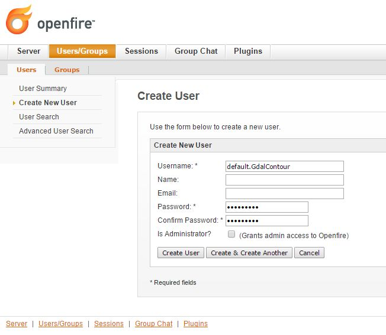
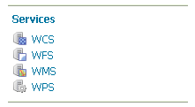

Deployment And Setup Of The XMPP Python Wrappers
Remote WPS Python Wrapper Framework
The Remote WPS Python framework source code is available on a public GitHub Repository of GeoSolutions S.A.S.
Users can install the "wps-remote" Python package by using the PyPi distribution :
pip install wps-remote==2.11.0
The source code repository is available at the following address:
The source code is available on the main development (main) branch.
How The System Works
This setup will configure the Remote WPS Python Wrapper to launch a Python executable called test.py that performs a gdal_contour on a GeoTIFF DEM.
The test.py executable takes in input just two parameters:
-i; "--interval", nargs='?', default="10", help="Elevation interval between contours."-w; "--workdir", nargs='?', default="", help="Remote process sandbox working directory."
The paths of the command line and GeoTIFF to process (provided with the source code as sample data), are hard-coded into the Python code and must be changed accordingly to the system settings as explained later in the docs:
gdalContour = r'/usr/bin/gdal_contour'src = r'/share/xmpp_data/resource_dir/srtm_39_04/srtm_39_04_c.tif'
The assumptions are that during the execution, the algorithms send logging and progress info to the standard output in a form similar to the following one:
The log format has been configured through the logger_test.properties file:
[loggers]
keys=root
[handlers]
keys=consoleHandler
[formatters]
keys=simpleFormatter
[logger_root]
level=DEBUG
handlers=consoleHandler
[handler_consoleHandler]
class=StreamHandler
level=DEBUG
formatter=simpleFormatter
args=(sys.stdout,)
[formatter_simpleFormatter]
format=%(asctime)s - %(name)s - [%(levelname)s] %(message)s
datefmt=
The role of the Remote WPS Python wrapper is to take care of the communication between GeoServer WPS and the test.py executable.
The Python wrapper must be configured by specifying the number and type of input and output parameters of the executable, other than the connection parameter of the remote XMPP Server. The Python wrapper knows how to invoke the executables from the command line and how to parse and interpret the logging information thanks to some properties files containing a set of regular expressions which will be presented in details further in this document.
There must be a running instance of the Python wrapper for each executable, every one with its own specific configuration and XMPP user. The wrapper instances will connect automatically to the XMPP Server and GeoServer will send an "invite" message as soon it recognizes a new authenticated user appearing on the XMPP communication channels. In order to register the WPS Process into the GeoServer through the Remote Process Factory, the Python wrapper must reply to the invitation with a "register" message containing all the details about the I/O params of the executable. All those passages are managed automatically and transparently to the users by the Remote WPS Python framework.
Every time a user issues a new GeoServer WPS execute request, the Python wrapper starts a new thread calling the executables with the input parameters coming from GeoServer itself. The two running instances are connected through a unique "process execution ID" generated by GeoServer Remote Process Factory.
From now on, the Python wrapper thread follows the entire execution and takes care of sending feedbacks and logging information to the GeoServer Remote Process Factory, which are translated and forwarded to the GeoServer WPS Execution Manager. From the outside the users will experience a standard execution of an OGC WPS compliant process.
Summary Of The Configuration Steps
Connecting a new executable instance to GeoServer through the Python wrapper requires few configuration steps summarized here below:
-
- Clone a structure of
.propertiesfiles containing: -
- The connection parameter to the XMPP Server
- The descriptor of the executable command line
- The descriptor of the process I/O parameters
- The logging informations
- Clone a structure of
-
- Update the
remote.configfile with the correct XMPP Server information: -
- Provide remote host and port parameters
- Provide domain and XMPP communication secured channels details
- Provide pointers to the shared folder
- Update the
-
Update the
logger.propertiesfile with the full path to theservice.logfile. -
- Update the
service.configfile with the executables parameters: -
- The service name and the namespace
!!! note there must exist an user on the XMPP Server named as `namespace.serviceName` and a communication channel with the same identified of the service namespace. e.g.: - service = gdalContour - namespace = default means that on the XMPP Server we are looking for a communication channel named `default` and we will try to connect with the username `default.gdalContour`. Both of them must be defined before running the Python wrapper daemon. - The description of the service and the full path to the main executable - Other secondary parameters like the local output folder (where to store temporary results of the execution) and the max running time - The description of the Inputs and the actions to be taken - The description of the Outputs and the actions to be taken - The description of the logging information and the actions to be taken - Update the
Installation and Configuration Steps
Basic Environment Preparation
The following commands will prepare a MS Windows 7+, Windows 2008+ Server ISO machine for the deployment of:
- Remote WPS Python wrapper
- Sample configuration and testing of a sample executable
test.pyrunning thegdal_contouron a GeoTIFF DEM
Preparation of the system: standard and basic OS packages
Python
The system requires Python 2.7.9+ with few packages in order to work correctly. The installation of Python on a Windows system is quite fast
# as administrator
#.1 Download the Python 2.7.9 installation package from the browser, choosing the best suitable distribution accordingly to the OS
https://www.python.org/downloads/release/python-279/
#.2 Define the following System Environment Variables
PATH=%PATH%;C:\Python27;C:\Python27\Scripts
PYTHONPATH=.\;C:\Python27;C:\work\RemoteWPS
Other Mandatory Python Packages
Configure the RemoteWPS Environment
NFS Shared Folder
Link the shared folder to the C:/share through the NFS protocol. This is possible simply by turning on the NFS Services of the MS Windows functionalities and creating a client NFS connection to the NFS server.
Warning
"Services for NFS" have been removed on Windows 10. They are available only on Windows 10 Enterprise edition. For older Windows versions you can use the following procedure in order to enable NFS Client
Installing the client
- Go to Control Panel → Programs → Programs and Features
- Select: Turn Windows features on or off" from the left hand navigation.
- Scroll down to "Services for NFS" and click the "plus" on the left
- Check "Client for NFS"
- Select "Ok"
- Windows should install the client. Once the client package is install you will have the "mount" command available.
Mounting the export
This assumes the following:
- You know and can ping the hostname of the machine with the NFS exports
- The name of the exported filesystem ( eg. /export, /home/users, /some/cool/file/path )
-
- Open a command prompt. (
Win+R, enter "cmd" and press OK )
The file systems are properly exported and accessible
-
Type:
mount \\{machinename}\{filesystem} {driveletter}
- Open a command prompt. (
Examples:
mount \\filehost\home\users H:
mount \\server1234\long\term\file\storage S:
mount \\nas324\exports E:
Note
It is important that the shared folder structure is fully replicated on the Windows machine and the folder writable by the Windows processes.
First Deploy Of The RemoteWPS Python Framework
The wps-remote WHL archive contains a folder with a sample configuration :
xmpp_data
Extract this folder and proceed with the next steps.
The files can also be downloaded from the GitHub source repository.
To clone the RemoteWPS Python Framework into a working folder, e.g.:
Setting Up The remote.config
# Edit the file xmpp_data/configs/remote.config
[DEFAULT]
bus_class_name = xmppBus.XMPPBus
port = 5223
address = 127.0.0.1
domain = geoserver.org
# . Those are the connection parameters to the XMPP Server.
# . The user must exists on the Server and its name must be
# . equal to the service name.
user = default.GdalContour
password = R3m0T3wP5
mucService = conference.%(domain)s
mucServicePassword = admin
resource_file_dir = /share/xmpp_data/resource_dir
# . Configure this option (along with 'backup_on_wps_execution_shared_dir'
# . on single outputs of 'service.config') in order to make a copy
# . of the results into a shared folder before sending messages to XMPP
# . WARNING: this option takes precedence on "UPLOADER" option
# wps_execution_shared_dir = /share/xmpp_data/share
# . This section is used to configure the uploader class and connection
# . parameters.
# . This is necessary in order to let the 'upload_data' option work on
# . single outputs of 'service.config'
[UPLOADER]
# There are different implementations of the FTP Uploader available right now:
# . Plain standard FTP Protocol (based on ftplib)
# ftpUpload.FtpUpload
# . FTP over TLS (FTPS) Protocol (based on ftplib)
# ftpsUpload.FtpsUpload
# . S-FTP Protocol (based on paramiko Python lib)
# sftpUpload.SFtpUpload
uploader_class_name = ftpUpload.FtpUpload
uploader_host = ftp.<your_host_here>:<your_port_here_default_21>
uploader_username = <ftp_username>
uploader_password = <ftp_password_encrypted>
# . "encryptor" you can use encrypted passwords with a private/public key couple
#
# . To generate a new private key use the following command:
# openssl genrsa -out myTestKey.pem -passout pass:"f00bar" -des3 2048
#
# . To generate a new public key use the following command:
# openssl rsa -pubout -in myTestKey.pem -passin pass:"f00bar" -out myTestKey.pub
#
# . To encrypt your password use the following utility
# python encrypt.py password path/to/rsakey.pub passphrase
#
# . To double check the password is correct use the following utility
# python decrypt.py password path/to/rsakey.pem passphrase
uploader_private_rsa_key = /share/xmpp_data/ssl/myTestKey.pem
uploader_passphrase = f00bar
The requisites for this configuration to work properly are:
- Make sure the
<XMPP_server_ip_address>is reachable and the port 5223 is allowed by the Firewall- Make sure the
default.GdalContouruser exists into the XMPP Server and that the password is correct
- The MUC Service and the MUC Service Password are correct
- The resource dir and the shared folder exists and are writable
Setting Up The logger.properties
# Edit the file xmpp_data/configs/logger.properties
[loggers]
keys=root
[handlers]
keys=consoleHandler,file
[formatters]
keys=simpleFormatter,consoleFormatter
[logger_root]
level=DEBUG
handlers=file, consoleHandler
[handler_consoleHandler]
class=StreamHandler
level=DEBUG
formatter=consoleFormatter
args=(sys.stdout,)
filter=
[handler_file]
class=handlers.TimedRotatingFileHandler
interval=midnight
backupCount=5
formatter=simpleFormatter
level=DEBUG
args=('/share/xmpp_data/service.log',)
[formatter_simpleFormatter]
format=%(asctime)s - %(name)s - %(levelname)s - %(message)s
datefmt=
[formatter_consoleFormatter]
format=%(asctime)s [%(levelname)s] %(message)s
datefmt=
The requisites for this configuration to work properly are:
- Make sure the "C:/share/xmpp_data/" exists and is writable
Setting Up The service.config
# Edit the file xmpp_data/configs/myservice/service.config
# This is a INI file to be read with python ConfigParser (https://docs.python.org/2/library/configparser.html)
# Is possible to reference another variable in the ini file using the format %(<variable name>)s (note the 's' at the end)
# ########################################### #
# Default Service Params #
# ########################################### #
[DEFAULT]
service = GdalContour
namespace = default
description = GDAL Contour Remote Service
executable_path = /share/xmpp_data/configs/myservice/code
executable_cmd = python %(executable_path)s/test.py
output_dir = /share/xmpp_data/output/
unique_execution_id = %(unique_exe_id)s
workdir = %(output_dir)s/%(unique_execution_id)s
active = True
max_running_time_seconds = 300
# . This option allows you to set the CPU and Memory average load scan time.
# . It is espressed in 'minutes' and if disabled here it will be set by default
# . to 15 minutes.
load_average_scan_minutes = 1
# . Use this option to completely avoid using this host (and prevent starting a new
# . 'processbot') whenever one of the following process names are running.
# . In other words, if one of the following processes are currently running on this machine,
# . GeoServer won't send any WPS execute request until they are finished.
process_blacklist = [resource consuming process name1, resource consuming process name2]
# ########################################### #
# Inputs and Actions Declaration #
# ########################################### #
[Input1]
class = param
name = interval
title = Elevation Interval
type = int
description = Elevation interval between contours.
min = 1
max = 1
default = 200
[Action1]
class = cmdline
input_ref = interval
alias = i
template = -name value
[Const1]
class = const
name = workdir
type = string
description = Remote process sandbox working directory
value = %(workdir)s
[Action2]
class = cmdline
input_ref = workdir
alias = w
template = -name value
# ########################################### #
# Output Parameters Declaration #
# ########################################### #
[Output1]
name = result1
type = application/zip
description = WPS Resource Binary File
title = SRTM
filepath = %(workdir)s/contour.zip
publish_as_layer = true
publish_default_style = polygon
publish_target_workspace = it.geosolutions
publish_layer_name = contour
# . Enable this option in order to perform a backup of this output
# . before sending it to GeoServer.
# . WARNING: This option works only along with 'wps_execution_shared_dir'
# . option on 'remote.config', and takes precedence on 'upload_data'
# backup_on_wps_execution_shared_dir = true
# . Enable this option if you want the output to be uploaded on remote host.
# . Notice that you must also configure uploader parameters on 'remote.config'
# upload_data = true
# . Optionally it is possible to specify a root folder if the uploader class supports it.
# upload_data_root = /remote-wps/default
[Output2]
name = result2
type = application/x-netcdf
description = NetCDF Binary File
title = flexpart
filepath = %(output_dir)s/flexpart.nc
publish_as_layer = true
publish_default_style = raster
publish_target_workspace = it.geosolutions
publish_layer_name = flexpart
# . Enable this option in order to perform a backup of this output
# . before sending it to GeoServer.
# . WARNING: This option works only along with 'wps_execution_shared_dir'
# . option on 'remote.config', and takes precedence on 'upload_data'
# backup_on_wps_execution_shared_dir = true
# . Enable this option if you want the output to be uploaded on remote host.
# . Notice that you must also configure uploader parameters on 'remote.config'
# upload_data = true
# . Optionally it is possible to specify a root folder if the uploader class supports it.
# upload_data_root = /remote-wps/default
[Output3]
name = result3
type = application/owc
description = WPS OWC Json MapContext
layers_to_publish = result2
publish_as_layer = true
publish_layer_name = owc_json_ctx
publish_metadata = /share/xmpp_data/resource_dir/owc_json_ctx.json
# ########################################### #
# Logging Options Declaration #
# ########################################### #
[Logging]
stdout_parser = [.*\[DEBUG\](.*), .*\[INFO\] ProgressInfo\:([-+]?[0-9]*\.?[0-9]*)\%, .*\[(INFO)\](.*), .*\[(WARN)\](.*), .*\[(ERROR)\](.*), .*\[(CRITICAL)\](.*)]
stdout_action = [ignore, progress, log, log, abort, abort]
The requisites for this configuration to work properly are:
Make sure the
default.GdalContouruser exists into the XMPP Server and that the password is correctMake sure the
defaultchannel exists on the XMPP ServerMake sure the executable path and command are correct
Make sure the
output_direxists and is writableMake sure the
max_running_time_secondshave been set to a value high enough to allow the executables to complete the jobs.The GeoServer instance must also respect the WPS execution timings which must be configured accordingly. In order to do that access to the GeoServer Web Admin GUI.
login as administrator (default credentials are admin/geoserver which should be changed anyway).
From the Web Processing Service settings page

The timeouts and the number of parallel executions (both async and sync) must be tuned accordingly to the execution needs.
Make sure the inputs have been configured correctly for the command line execution
[Input1] class = param name = interval title = Elevation Interval type = int description = Elevation interval between contours. min = 1 max = 1 default = 200 [Action1] class = cmdline input_ref = interval alias = i template = -name valueThe configuration above sets an input of type
int(the expected value will be interpreted as text and declared as Literal to the WPS), which is mandatory (min = 1) and can have a single value (max = 1).The
[Action1]is connected to the input through theinput_refwhich is equal to the[Input1].name.In the example above the action simply gets the input value specified by the user and forward it to the command line.
The final result will be something lihe this:
$> /work/RemoteWPS/xmpp_data/configs/myservice/code/test.py <input_value_here>The
[Action1].templateproperty allows to specify the name of the option if required by the executable.As an instance the following value for the
[Action1].template:alias = i template = -name valuewill result in something like this:
$> /work/RemoteWPS/xmpp_data/configs/myservice/code/test.py -i <input_value>There exists other types of input and actions.
As an instance it is possible to specify
constantinput types like the following one:[Const1] class = const name = workdir type = string description = Remote process sandbox working directory value = %(workdir)s [Action2] class = cmdline input_ref = workdir alias = w template = -name valueThe
[Const1].valuecan be a constant value or a reference to the configuration file properties.In the example above we are going to pass to the command line the full path of the process workind directory, which is a unique folder created at runtime where the RemoteWPS framework stores temporary and intermediate results of the process execution.
Enabling the constant input above, the resulting command line will be something like the following one:
$> /work/RemoteWPS/xmpp_data/configs/myservice/code/test.py -i <input_value> -w /share/xmpp_data/output/<exec_id>::: note ::: title Note :::
The
is known at runtime only. ::: Make sure the outputs have been configured correctly for the command line execution
[Output1] name = result1 type = application/zip description = WPS Resource Binary File title = SRTM filepath = %(workdir)s/contour.zip publish_as_layer = true publish_default_style = polygon publish_target_workspace = it.geosolutions publish_layer_name = contourIn the example above we declare to the WPS only one output of type
application/zip.In this case the RemoteWPS framework expects to find a
contour.zipfile at the end of the execution into the working directory (see above).There are many kind of possible outputs which can be defined here. As an instance it is possible to define an output of type
stringwhich can read the outcome from a file and stream it out as plain text.It is also possible to define several kind of binary outputs depending on the executable outcomes. For more details please refer to the Remote WPS Python framework specific documentation at the end of this section.
Make sure the regular expressions of the "stdout_parser" are correct and valid accordingly to the output of the executable
[Logging] stdout_parser = [.*\[DEBUG\](.*), .*\[INFO\] ProgressInfo\:([-+]?[0-9]*\.?[0-9]*)\%, .*\[(INFO)\](.*), .*\[(WARN)\](.*), .*\[(ERROR)\](.*), .*\[(CRITICAL)\](.*)] stdout_action = [ignore, progress, log, log, log, abort]The example configuration above:
- Ignores all
STDOUTdebug logs received fromtest.py- Translates as progress info message any number parsed by the regex from
STDOUTand sends it to GeoServer WPS.- Logs all
STDOUTinfo, warn and error logs received fromtest.py- Translates as abort message any keyword CRITICAL parsed by the regex from
STDOUTand sends it to GeoServer WPS.At least progress and abort messages are mandatory in order to take track of the process execution progress and fault state.

A Running Example
In the section A Remote "Gdal Contour" Process Binding Example will show how to run the example and how to parse the results in GeoServer.
ANNEX A: Remote WPS Python Wrapper Reference
This section is meant to be a summary of the current possible options for the RemoteWPS Python Wrapper service.config configuration.
Default Section
# ########################################### #
# Default Service Params #
# ########################################### #
[DEFAULT]
service = GdalContour
namespace = default
description = GDAL Contour Remote Service
executable_path = /work/RemoteWPS/xmpp_data/configs/myservice/code
executable_cmd = python %(executable_path)s/test.py
output_dir = /share/xmpp_data/output/
unique_execution_id = %(unique_exe_id)s
workdir = %(output_dir)s/%(unique_execution_id)s
sharedir = /home/myproc/repository/default
active = True
max_running_time_seconds = 300
load_average_scan_minutes = 1
process_blacklist = [resource consuming process name1, resource consuming process name2]
-
service; The name of the WPS service. On GeoServer the WPS Process will be represented as
namespace.serviceNote
The XMPP Server must have a registered user named like the fully qualified service name
namespace.service -
namespace; The namespace (or prefix) of the service. Along with the service parameter, it represents the fully qualified name of the service.
-
description; This contains the textual description of the GeoServer WPS Process.
-
executable_path; Full path of the executable to wrap.
-
executable_cmd; Executable command.
-
output_dir; The base output folder where the Python wrapper stores logs and temporary files.
-
unique_execution_id; The unique ID generated by GeoServer and sent to the process via the REQUEST command message.
-
workdir; Temporary folder where to store the outcomes and log files.
-
sharedir; Shared folder where to backup outcomes with
backup_on_wps_execution_shared_dirproperty equal true -
active; Boolean which enables or disables the service.
-
max_running_time_seconds; After this time the Python Wrapper tries to shutdown the process and send a FAILED message to GeoServer.
-
load_average_scan_minutes; This option allows you to set the CPU and Memory average load scan time. It is espressed in 'minutes' and if disabled here it will be set by default to 15 minutes.
-
process_blacklist; Use this option to completely avoid using this host (and prevent starting a new 'processbot') whenever one of the following process names are running. In other words, if one of the following processes are currently running on this machine, GeoServer won't send any WPS execute request until they are finished.
Inputs Section
# ########################################### #
# Inputs and Actions Declaration #
# ########################################### #
[Input1]
class = param
name = interval
title = Elevation Interval
type = int
description = Elevation interval between contours.
min = 1
max = 1
default = 200
[Action1]
class = cmdline
input_ref = interval
alias = i
template = -name value
[Const1]
class = const
name = workdir
type = string
description = Remote process sandbox working directory
value = %(workdir)s
[Action2]
class = cmdline
input_ref = workdir
alias = w
template = -name value
The Inputs Section can contain three type of objects:
[Input#]; Descriptor of the corresponding GeoServer WPS Input parameter.[Action#];1..nactions of the Python Wrapper associated to an[Input]. The reference is done through the input_ref property.[Const#]; Constant values passed to the executable and transparent to the GeoServer WPS.
[Input#]
- class; Uses introspection to instantiate an Input parameter. Currently the only value admitted is
param- name; The name of the input parameter. This will be also the name of the GeoServer Input parameter.
- title; The title of the input parameter. To be used as internal descriptor.
- description; The description of the input parameter. This will be also the description of the GeoServer Input parameter.
- type; The type of the input parameter. Allowed types are:
string; Simple text input. Invalid characters will be automatically removed.int; Integer numeric input value.float; Float numeric input value.url; Must contain a valid URL. Invalid characters will be automatically removed.application/json; Threated as a JSON string. It will be parsed by the Python Wrapper and converted into a complex object.datetime; Converted into a Pythondatetimeobject accordingly to the formatter property containing the date pattern and which must also be provided.- min; Optional parameter which sets the minimum set of inputs of this type allowed by the GeoServer WPS. 0 by default.
- max; Optional parameter which sets the maximum set of inputs of this type allowed by the GeoServer WPS. 0 (alias infinite) by default.
- default; Optional parameter for setting the default value of this input if a value has not provided.
- formatter; Optional parameter to be used along with
datetimeinputs. Defines the date pattern to be applied to the input string (e.g.: %Y-%m-%d %H:%M:%S)
[Action#]
class; Uses introspection to instantiate the type of Action.
cmdline; The value of the associated input will be passed to the executable as a key-value pair accordingly to thetemplatespecified (e.g.: --name=value).
template; Template of the key-value pair format (e.g.: template = -name value)alias; Alias of the key (e.g.: alias = i will be translated as -i value)
createJSONfile; The value of the associated input will be dumped to a JSON file and the reference to the file passed to the executable.
target_filepath; PATH Where to store the JSON file.json_schema; The PATH to the JSON Schema to be used to validate the input values.
updateJSONfile; The value of the associated input will be substituted into a target template JSON file, which then will be passed to the executbale as reference.
source_filepath; PATH of the source JSON template file.target_filepath; PATH of the target JSON file.json_path_expr; JSON path expression used to subsitute the values.
copyfile; The value of the associated input will be interpreted as a path to a source file. The content of the file will be copied into a temporary file and then passed to the executbale as reference.
source_filepath; PATH of the source JSON template file.target_filepath; PATH of the target JSON file.
updateINIfile; The value of the associated input will be substituted into a target template INI file, which then will be passed to the executbale as reference.
source_filepath; PATH of the source JSON template file.target_filepath; PATH of the target JSON file.section; Section of the INI file where to store key-value pair entries.
updateINIfileList; The value of the associated input will be parsed as alistand substituted into a target template INI file, which then will be passed to the executbale as reference.
source_filepath; PATH of the source JSON template file.target_filepath; PATH of the target JSON file.section; Section of the INI file where to store key-value pair entries.input_ref;
nameof the input parameter referenced by this Action.
[Const#]
- class = const
- name; Name of the input parameter, used by an action as reference.
- type; May be one of the [Input#].type ones.
- description; Internal description of the parameter.
- value; Fixed value parsed by the referencing Action.
Outputs Section
# ########################################### #
# Output Parameters Declaration #
# ########################################### #
# WARNING: the name must start with the keyword "result"
[Output1]
name = result1
type = string
description = WPS Resource Plain Text
filepath = %(workdir)s/geoserverLayerOutput.xml
[Output2]
name = result2
type = image/geotiff
description = WPS Resource Binary File
title = SRTM
filepath = %(workdir)s/srtm_39_04_c.tif
backup_on_wps_execution_shared_dir = true
publish_as_layer = true
publish_default_style = raster
publish_target_workspace = it.geosolutions
publish_layer_name = srtm_39_04_c
# Such metadata is a JSON snippet itself (/tmp/resource_dir/result2.json) with a small particularity.
# Since you cannot know a-priori some of the final Layer properties,
# you can use inside the json (/tmp/resource_dir/result2.json) some keywords which will be updated
# automatically by the RemoteWPS which are the following ones:
#
# ${type}
# ${name}
# ${title}
# ${description}
# ${lastUpdated}
# ${getMapBaseUrl}
# ${srs}
# ${bbox}
# ${workspace}
# ${layers}
# ${styles}
publish_metadata = /<path_to>/resource_dir/result2.json
[Output3]
name = result3
type = image/geotiff;stream
description = WPS Resource Binary Stream
title = This Is A GeoTIFF Layer
filepath = %(workdir)s/srtm_39_04_c.tif
publish_as_layer = true
publish_default_style = raster
publish_target_workspace = it.geosolutions
publish_layer_name = srtm_39_04_c
[Output4]
name = result4
type = application/x-netcdf
description = NetCDF Binary File
title = Wind
filepath = %(workdir)s/RS1_STB_1FSCLS20111003_175545_00000018xS2x_16bxx_83066_29447_wind.nc
backup_on_wps_execution_shared_dir = true
publish_as_layer = true
publish_default_style = raster
publish_target_workspace = it.geosolutions
publish_layer_name = wind
# Such metadata is a JSON snippet itself (/tmp/resource_dir/result3.json) with a small particularity.
# Since you cannot know a-priori some of the final Layer properties,
# you can use inside the json (/tmp/resource_dir/result4.json) some keywords which will be updated
# automatically by the RemoteWPS which are the following ones:
#
# ${type}
# ${name}
# ${title}
# ${description}
# ${lastUpdated}
# ${getMapBaseUrl}
# ${srs}
# ${bbox}
# ${workspace}
# ${layers}
# ${styles}
publish_metadata = /<path_to>/resource_dir/result4.json
# ########################################### #
# GML Possible type values are #
# text/xml;subtype=gml/3.1.1 #
# text/xml;subtype=gml/2.1.2 #
# application/gml-3.1.1 #
# application/gml-2.1.2 #
# ########################################### #
[Output5]
name = result5
type = text/xml;subtype=gml/3.1.1
description = WPS Resource GML
filepath = %(workdir)s/geoserverLoadLayerOutput.xml
[Output6]
name = result6
type = video/mp4
description = Video MP4 Binary File
title = Wind
filepath = %(workdir)s/RS1_STB_1FSCLS20111003_175545_00000018xS2x_16bxx_83066_29447_wind.mp4
backup_on_wps_execution_shared_dir = false
[Output7]
name = result7
type = application/owc
description = WPS OWC Json MapContext
layers_to_publish = result2;result4
publish_as_layer = true
publish_layer_name = owc_json_ctx
publish_metadata = /<path_to>/resource_dir/owc_json_ctx.json
The examples above represents all the possible types of Outputs currently supported by the Remote WPS Wrapper.
type = string
The content of the file specified by the
filepathis read and sent to the WPS. The GeoServer WPS declares this as atext/plainoutput type.type = image/geotiff
The content of the binary GeoTIFF specified by the
filepathis read and sent to the WPS. The GeoServer WPS declares this as aotput binaryRAW FILE output type.type = image/geotiff;stream
The content of the binary GeoTIFF specified by the
filepathis read and sent to the WPS. The GeoServer WPS declares this as aotput binaryRAW STREAM output type.type = application/x-netcdf
The content of the binary NetCDF specified by the
filepathis read and sent to the WPS. The GeoServer WPS declares this as aotput binaryRAW FILE output type.type = text/xml;subtype=gml/3.1.1
The content of the file specified by the
filepathis read and sent to the WPS. The GeoServer WPS declares this as atext/xmloutput type.type = video/mp4
The content of the binary MPEG-4 specified by the
filepathis read and sent to the WPS. The GeoServer WPS declares this as aotput binaryRAW FILE output type.type = application/owc
This is a particular type of output. From the GeoServer WPS point of view is a
text/plainJSON output type describing a Web Mapping Context.The Remote WPS Plugin on GeoServer side takes care of publishing the layers specified by
layers_to_publish = result2;result4and render the templates specified bypublish_metadataof each output.The outcome will be a complex JSON WMC describing the map to publish.
In order to activate this funcionality, update the GeoServer
remoteProcess.propertieson theGEOSERVER_DATA_DIRwith a new option:# full path to the template used to generate the OWS WMC Json output owc_wms_json_template = /tmp/resource_dir/wmc_template.jsonSample
wmc_template.json{ "type": "FeatureCollection", "id": "GeoServer OWC Map Context: version of 2015-07-14", "geometry": { "type":"Polygon", "coordinates": ${renderingArea} }, "features" : [ <#list featureList?keys as key> { "type": "Feature", "id": "${featureList[key].name}", "geometry": { "type" : "Polygon", "coordinates" : ${featureList[key].geometryCoords} }, "properties": { <#if featureList[key].owcProperties != "">${featureList[key].owcProperties},</#if> "offerings" : [ { "code" : "http://www.opengis.net/spec/owc-atom/1.0/req/wms", "operations" : [{ "code" : "GetCapabilities", "method" : "GET", "type" : "application/xml", "href" : "${featureList[key].getMapBaseUrl}?SERVICE=WMS&VERSION=1.3.0&REQUEST=GetCapabilities", "request":{}, "result":{} },{ "code" : "GetMap", "method" : "GET", "type" : "image/png", "href" : "${featureList[key].getMapBaseUrl}?SERVICE=WMS&VERSION=1.1.1&REQUEST=GetMap&SRS=${featureList[key].srs}&BBOX=${featureList[key].bbox}&WIDTH=500&HEIGHT=500&LAYERS=${featureList[key].layers}&STYLES=${featureList[key].styles}&FORMAT=image/png&BGCOLOR=0xffffff&TRANSPARENT=TRUE&EXCEPTIONS=application/vnd.ogc.se_xml", "request":{}, "result":{} }], "contents" : [] } <#if featureList[key].type == "VECTOR"> ,{ "code" : "http://www.opengis.net/spec/owc-atom/1.0/req/wfs", "operations" : [{ "code" : "DescribeFeatureType", "method" : "GET", "type" : "application/xml", "href" : "${featureList[key].getMapBaseUrl}?SERVICE=WFS&VERSION=1.1.0&REQUEST=DescribeFeatureType&TYPENAME=${featureList[key].layers}", "request":{}, "result":{} },{ "code" : "GetFeature", "method" : "GET", "type" : "application/xml", "href" : "${featureList[key].getMapBaseUrl}?SERVICE=WFS&VERSION=1.1.0&REQUEST=GetFeature&TYPENAME=${featureList[key].layers}", "request":{}, "result":{} }], "contents" : [] } <#elseif featureList[key].type == "RASTER"> ,{ "code" : "http://www.opengis.net/spec/owc-atom/1.0/req/wcs", "operations" : [{ "code" : "DescribeCoverage", "method" : "GET", "type" : "application/xml", "href" : "${featureList[key].getMapBaseUrl}?SERVICE=WCS&VERSION=1.1.0&REQUEST=GetCapabilities&IDENTIFIER=${featureList[key].layers}", "request":{}, "result":{} },{ "code" : "GetCoverage", "method" : "GET", "type" : "image/tiff", "href" : "${featureList[key].getMapBaseUrl}?SERVICE=WCS&VERSION=1.1.0&REQUEST=GetCoverage&IDENTIFIER=${featureList[key].layers}&BOUNDINGBOX=${featureList[key].bbox}&FORMAT=GeoTIFF", "request":{}, "result":{} }], "contents" : [] } </#if> ] } }<#if key_has_next>,</#if> </#list> ] , "properties" : { ${owcProperties} } }Sample
owc_json_ctx.json"lang" : "en", "title" : "Sample Title goes here", "subtitle" : "Sample sub-title goes here", "generator" : "Sample generator", "rights" : "Sample Legal Constraints and CopyRights (C)", "authors" : [{"name" : "Author1 Name"}, {"name" : "Author2 Name"}], "contributors" : [{"name" : "Contrib1 Name"}, {"name" : "Contrib2 Name"}], "categories" : [{ "term" : "wms", "label" : "This file is compliant with version 1.0 of OGC Context" },{ "term" : "maps", "label" : "This file contains maps" }], "links" : [{ "rel" : "profile", "href" : "http://www.opengis.net/spec/owc-atom/1.0/req/core", "title" : "This file is compliant with version 1.0 of OGC Context" },{ "rel" : "via", "type" : "application/xml", "href" : "http://www.opengis.uab.cat/wms/satcat/metadades/EPSG_23031/Cat_20110301.htm", "title" : "HMTL metadata in Catalan" }]Sample
result#.json"title" : "Result 2", "updated" : "${lastUpdated}", "content" : "Sample Content Description for result 2 goes here", "authors" : [ { "name" : "GeoServer Administrator", "email" : "info@sample.author.com" } ], "authors" : [{"name" : "Author2.1 Name"}, {"name" : "Author2.2 Name"}], "contributors" : [{"name" : "Contrib2.1 Name"}, {"name" : "Contrib2.2 Name"}], "categories" : [{"name" : "Category2.1 Name"}, {"name" : "Category2.2 Name"}], "links" : [ { "rel" : "enclosure", "type" : "image/png", "title" : "WMS output for ${title}", "href" : "${getMapBaseUrl}?SERVICE=WMS&VERSION=1.1.1&REQUEST=GetMap&SRS=${srs}&BBOX=${bbox}&WIDTH=500&HEIGHT=500&LAYERS=${layers}&FORMAT=image/png&BGCOLOR=0xffffff&TRANSPARENT=TRUE&EXCEPTIONS=application/vnd.ogc.se_xml" }, { "rel" : "icon", "type" : "image/png", "title" : "Preview for ${title}", "href" : "${getMapBaseUrl}?SERVICE=WMS&VERSION=1.1.1&REQUEST=GetMap&SRS=${srs}&BBOX=${bbox}&WIDTH=100&HEIGHT=100&LAYERS=${layers}&STYLES=${styles}&FORMAT=image/png&BGCOLOR=0xffffff&TRANSPARENT=TRUE&EXCEPTIONS=application/vnd.ogc.se_xml" }, { "rel" : "via", "type" : "application/vnd.ogc.wms_xml", "title" : "Original GetCapabilities document", "href" : "${getMapBaseUrl}?SERVICE=WMS&VERSION=1.1.1&REQUEST=GetCapabilities" } ]
Other options for the Outputs
backup_on_wps_execution_shared_dir; This is a boolean which tells to the Remote WPS to store first the outcome into the sharedir defined into the
[DEFAULT]section before streaming out to GeoServer. This allows the Remote WPS to preserve the outcomes even when the resources are cleaned out.upload_data; This is a boolean which tells to the Remote WPS to upload first the outcome into the host defined into the
[UPLOADER]section before streaming out to GeoServer. This allows the Remote WPS to preserve the outcomes even when the resources are cleaned out.::: warning ::: title Warning :::
If both enabled for a certain output, the backup_on_wps_execution_shared_dir takes precedence to the upload_data one. :::
publish_as_layer; A boolean to instruct GeoServer Remote WPS to try to automatically publish the outcome as a new Layer through the GeoServer Importer Plugin.
publish_default_style; The default style to use when publishing the Layer.
publish_target_workspace; The default workspace to use when publishing the Layer.
publish_layer_name; The default name to use when publishing the Layer.
Logging Section
# ########################################### #
# Logging RegEx and Levels #
# ########################################### #
[Logging]
stdout_parser = [.*\[DEBUG\](.*), .*\[INFO\] ProgressInfo\:([-+]?[0-9]*\.?[0-9]*)\%, .*\[(INFO)\](.*), .*\[(WARN)\](.*), .*\[(ERROR)\](.*), .*\[(CRITICAL)\](.*)]
stdout_action = [ignore, progress, log, log, log, abort]
-
stdout_parser
This property must contain a list of regular expressions matching the possible executable
STDOUTlogging messages the user wants to forward to GeoServer.As an instance
Matches all the messages containing the keyword
[DEBUG]and forwards to the corresponding stdout_action (see below) the content of the first matching group(.*)In this case everything after
[DEBUG]is forwarded to the action.Another example
Matches all the messages containing the keyword
[INFO] ProgressInfo:<any_number>%and forwards to the corresponding stdout_action (see below) the content of the first matching group([-+]?[0-9]*\.?[0-9]*)In this case the expression extracts a float number form the text along with the sign
[-+] -
stdout_action
This property must contain a list of keywords associated to a particular action which will take the content of the corresponding regular expression and forwards it to GeoServer packaged ad a specific XMPP message.
As an instance
- progress; gets the content of the match and sends a PROGRESS XMPP message to GeoServer. The PROGRESS messgae must always contain a number.
- abort; gets the content of the match and sends a ABORT XMPP message to GeoServer. This will cause GeoServer to mark the WPS Process as FAILED.
- ignore; simply throws out everything matching the corresponding regular expression.
- log; sends a LOG message to GeoServer with the content of the match. This will appear into the GeoServer Log file.